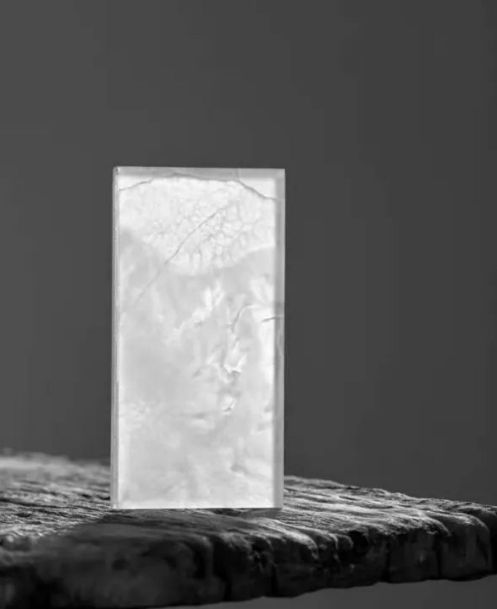

Ultra-thin Cutting · Advanced Composite
Approximately 3 mm cutting lets light pass through authentic stone veining, revealing richer and more dynamic depth.
Patented hot-fusion technology bonds ultra-thin natural stone with glass, preserving authentic veining while creating a lighter, thinner and more luminous material.

Approximately 3 mm cutting lets light pass through authentic stone veining, revealing richer and more dynamic depth.
Veining, dimensions, lighting and construction details can be developed around each project’s spatial concept.
From facades and interiors to landscapes, doors, furniture and art installations, it opens more cross-disciplinary possibilities.
See what it can do first, then enter the details.
The complete texture system is on the material page.
Wall panels, door systems and art products map directly to spatial interfaces.

For feature walls, reception zones and interior elevations.

Let stone veining become door panels, partitions and spatial interfaces.

A smaller-scale expression of natural veining and transmitted light.
Understand how it works in spaces and how it lands in projects.
Use completed results to judge whether the material fits your project.

A luminous facade along the homecoming route.

A natural stone expression for high-end commercial facades.

Feature walls connect paths and courtyard boundaries.
Tell us the space type and application position; we respond with samples and project references.